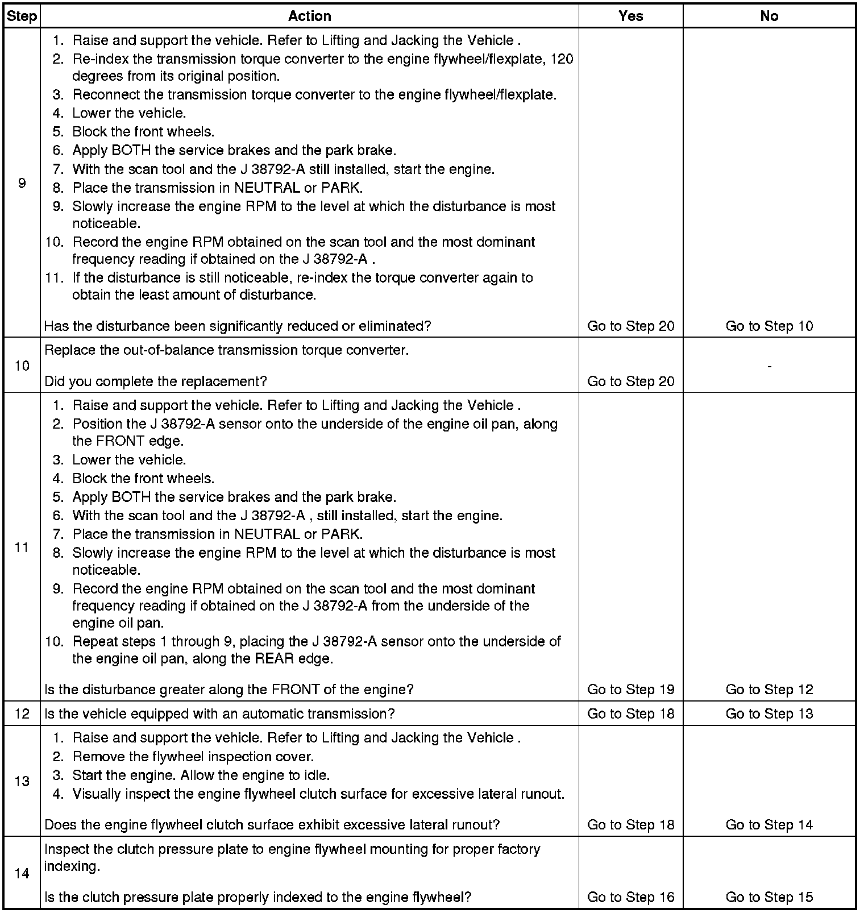

Vibration Analysis - Engine Balance
Vibration Analysis - Engine Balance
Test Description
The numbers below refer to the step numbers on the diagnostic table.
4. If sufficient clearance exists to separate the transmission torque converter from the engine flywheel/flexplate, then further tests can be used to isolate the transmission from the engine.
5. An engine flywheel/flexplate that has excessive lateral runout, when combined with the mass of the transmission torque converter, can produce a disturbance.
6. An engine flywheel/flexplate that is loose at the engine crankshaft or that is cracked or damaged, when combined with the mass of the transmission torque converter, can produce a disturbance.
7. This step is designed to isolate the transmission from the engine to determine if the disturbance is related to the engine ONLY.
9. Re-indexing the transmission torque converter to the engine flywheel/flexplate alters the balance relationship between the torque converter and the rear of the engine.
11. Placing the J 38792-A sensor onto the underside of the engine oil pan along the FRONT and the REAR edge allows for a determination to be made, which will help to narrow down the cause of the disturbance.
13. An engine flywheel that has excessive lateral runout, when combined with the extra mass of the clutch pressure plate and clutch driven plate, can produce a disturbance.
14. The clutch pressure plate and the engine flywheel are marked for proper indexing of the heavy-spot of one to the light-spot of the other. Improper indexing of the pressure plate to the flywheel can produce a disturbance.
15. An engine flywheel that is loose at the engine crankshaft or that is cracked, damaged and/or missing balance weights; and/or a clutch pressure plate and clutch driven plate that has loose springs, cracks, warpage, damage and/or missing balance weights - can produce a disturbance when their mass is combined.
16. An engine flywheel that is loose at the engine crankshaft or that is cracked, damaged and/or missing balance weights; and/or a clutch pressure plate and clutch driven plate that has loose springs, cracks, warpage, damage and/or missing balance weights - can produce a disturbance when their mass is combined.
17. Re-indexing the pressure plate to the engine flywheel alters the balance relationship between the pressure plate/flywheel assembly and the rear of the engine.
18. An engine flywheel/flexplate that is damaged, misaligned, and/or imbalanced, can produce a disturbance.
19. An engine crankshaft balancer that is damaged, misaligned, and/or imbalanced, can produce a disturbance.

